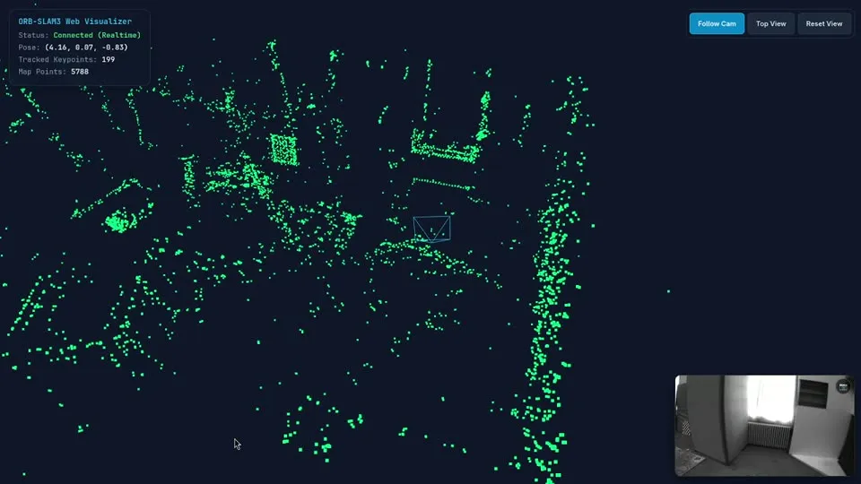

SLAM in one paragraph#
SLAM — Simultaneous Localisation And Mapping — is the problem of building a map of an unknown place while tracking your position in it. Visual SLAM does it with cameras. Lesson 16 already did a tiny version: estimate motion with PnP, extend the map by triangulation. A real system has to run at camera rate, for hours, and correct its own drift.
ORB-SLAM (Mur-Artal, Tardós et al.) is the reference open-source system. Version 3 supports monocular, stereo and RGB-D cameras, with or without an IMU, and multiple maps.
How it works: three threads#
1. Tracking (every frame). Extract ORB features (lesson 12) on an 8-level pyramid. Predict the pose with a motion model, project the local map into the image, match, and refine the pose by minimising the reprojection error (motion-only bundle adjustment — PnP, lesson 14/16). Decide whether this frame should become a keyframe.
2. Local mapping (every keyframe). Triangulate new points with neighbouring keyframes (lesson 16), cull bad points and redundant keyframes, and run local bundle adjustment: jointly optimise the poses of nearby keyframes and the points they see.
3. Loop closing. Every keyframe is converted into a bag of visual words: each ORB descriptor is mapped to a word of a pre-trained vocabulary (ORBvoc.txt), and the keyframe becomes a word histogram. Similar histograms = probably the same place. A candidate loop is verified geometrically (RANSAC on a similarity transform, lesson 13), and then the accumulated drift is spread along the whole trajectory with a pose-graph optimisation.
The same vocabulary gives relocalisation: when tracking is lost, the current frame is searched in the database of keyframes.
| Course lesson | Where it lives in ORB-SLAM3 |
|---|---|
| 11 – corners, NMS | FAST detection, grid-based keypoint distribution |
| 12 – ORB descriptors | features of every frame, matching by Hamming distance |
| 13 – RANSAC | initialisation and loop verification |
| 14 – camera model, PnP | the calibration YAML, pose tracking |
| 16 – essential matrix, triangulation | monocular initialisation, local mapping |
Running it: Docker + ROS 2#
Building ORB-SLAM3 with Pangolin, OpenCV and ROS 2 on your own machine is a dependency nightmare; a container makes it reproducible. These are the steps from my INSA project (ROS 2 Humble), with the ORB-SLAM3 fork of the Natalnet lab:
# build the image and start a container that can open windows (X11)
docker build -t ros2_orbslam_dev .
xhost +local:docker
docker run -it --name orbslam_container \
--env="DISPLAY=$DISPLAY" --env="QT_X11_NO_MITSHM=1" \
--volume="/tmp/.X11-unix:/tmp/.X11-unix:rw" \
--network=host --privileged \
ros2_orbslam_dev
# later sessions
docker start orbslam_container
docker exec -it orbslam_container bash
Inside the container: Pangolin (the 3-D viewer), ORB-SLAM3 and the ROS 2 wrapper.
git clone https://github.com/natalnet-lpr/ORB_SLAM3_Modular.git
cp -R Vocabulary ORB_SLAM3_Modular/
git clone --recursive https://github.com/stevenlovegrove/Pangolin.git
cd Pangolin && ./scripts/install_prerequisites.sh recommended
cmake -B build -GNinja && cmake --build build && sudo cmake --install build && sudo ldconfig
cd ~/ORB_SLAM3_Modular && chmod +x build.sh && ./build.sh
cd ~/ros2_ws && colcon build && source install/setup.bash
Run the monocular node with the vocabulary and a camera calibration file (lesson 14), then play a recorded ROS 2 bag in a second terminal:
ros2 run ros2_orbslam3 mono Vocabulary/ORBvoc.txt camera_calibration.yaml
# second terminal
docker exec -it orbslam_container bash
ros2 bag play insa_04/
The calibration file matters
ORB-SLAM3 reads \(f_x, f_y, c_x, c_y\), the distortion coefficients, the image size and the frame rate from the YAML. A wrong calibration does not crash anything: the map is just bent, the scale drifts, and loops fail to close.
From mapping to localisation: my drone project#
In my current research I use this split to fly a small drone (DJI Tello) through a known room:
- Map once with a good sensor. An RGB-D camera (Kinect) gives metric depth, so the map has the right scale. ORB-SLAM3 saves the atlas to disk at shutdown.
- Localise with the drone's camera. A monocular node loads the atlas and runs in localisation-only mode: no new map points, only tracking and relocalisation against the saved keyframes — a different camera finding itself in someone else's map.
- Navigate. The pose is published on ROS 2 topics for a planner (Nav2).

Code: drone-map-loc and orbslam3-ros2-docker.
Exercises#
- Run ORB-SLAM3 on a public sequence (the EuRoC or TUM RGB-D datasets have ready-made YAML files) and compare the monocular and stereo trajectories.
- Calibrate your phone (lesson 14), record a video walking around a room, convert it to a ROS 2 bag and map the room.
- Turn off loop closing and walk a closed loop. How large is the drift when you come back to the start?